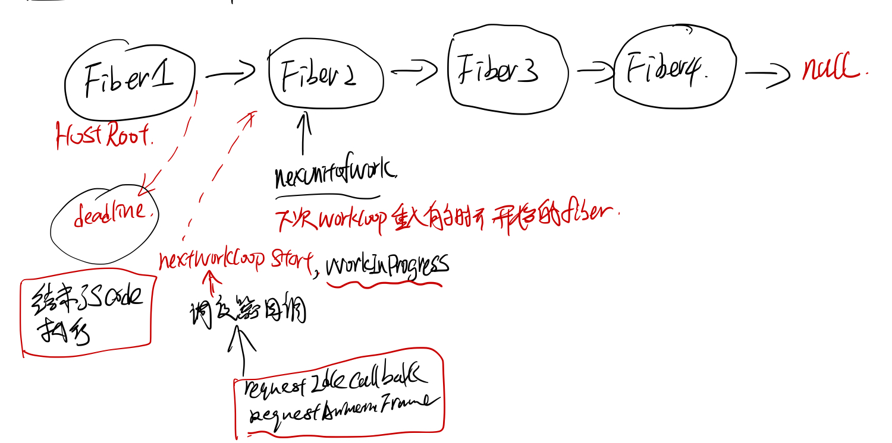
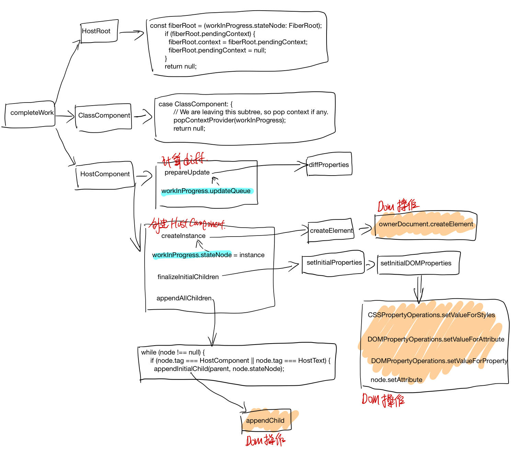
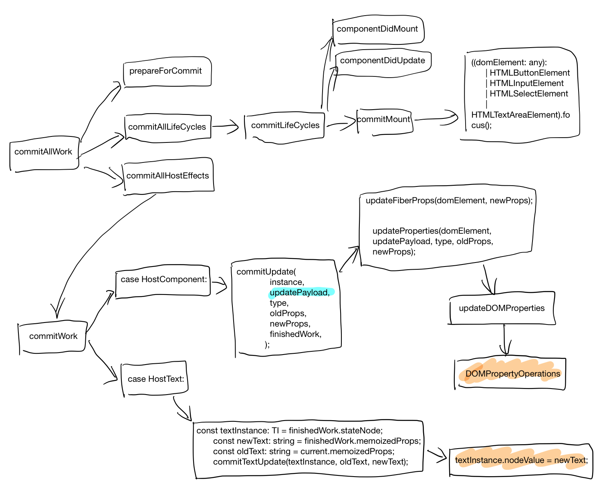

React中state render到html dom的流程分析
Questions
- React的component的lifecycle 在react中是怎么被调到的.
- 分析jsx => element tree => fiber tree => html dom在react中的流程.
- react中的fiber tree的建立和执行, 以及异步的schedule.

研究工具和方法
- chrome debug 打断点
- ag the silver searcher, 源代码全局搜索.
- 猜测它的实现原理，打log, call trace验证, console.log, console.trace;
准备工作
代码下载,编译
$ git clone git@github.com:facebook/react.git
$ cd react
$ yarn install
$ gulp react:extract-errors
$ yarn build
Component lifeCycle callback
准备最简单的组件HelloWorld
import React from "react"
import ReactDom from "react-dom"
class HelloWorld extends React.Component{
constructor(props){
super(props);
this.state = {
message: "hello, world"
}
}
componentWillMount(){
console.log("component will mount");
}
componentWillUpdate(){
console.log("component will update");
}
componentDidUpdate(){
console.log("component did update");
}
componentDidMount(){
console.log("componentDidMount");
}
render(){
return <span className={this.state.message}>
{this.state.message}
</span>;
}
}
ReactDom.render(<HelloWorld/>, document.getElementById("app"));
在componentWillMount, componentDidMount, componentWillUpdate, componentDidUpdate中打个断点

创建html dom的callstack
react中最后一定会去调用document.createElement去创建html的dom节点，所以把document.createElement这个方法覆盖了，加了一层log.
var originCreateElement = document.createElement;
document.createElement = function() {
if (arguments[0] === 'span'){
console.log('create span');
}
return originCreateElement.apply(document, arguments);
}
然后打断点，得到的callstack如下:

call flow 整理
函数间的callflow 整理如下

函数所属模块之间的call flow 整理如下

Fiber
fiber的设计思想
在react-fiber-artchitecture 中作者描述了fiber的设计思想，简单来说，每个fiber就是一个执行单元，可以任意的修改它的优先级，可以pause 它，之后再继续执行（感觉很像进程线程的概念）。
实际中执行一个fiber可以生成下一步要执行的fiber，然后fiber执行之前可以检查时候js跑的时间时候用完了，如果用完了，就挂起来，等待下次requestIdleCallback/requestAnimationFrame的callback, schedule 开始接着上次结束的地方继续执行js code.
相当于把以前的js function 的call stack 改成fiber chain了。

workLoop 函数主要逻辑如下（注，删除了错误处理和其他不相干的if else 分支)
performWork
// ReactScheduler.js workLoop
if (deadline !== null && priorityLevel > TaskPriority) {
// The deferred work loop will run until there's no time left in
// the current frame.
while (nextUnitOfWork !== null && !deadlineHasExpired) {
if (deadline.timeRemaining() > timeHeuristicForUnitOfWork) {
nextUnitOfWork = performUnitOfWork(nextUnitOfWork);
if (nextUnitOfWork === null && pendingCommit !== null) {
// If we have time, we should commit the work now.
if (deadline.timeRemaining() > timeHeuristicForUnitOfWork) {
commitAllWork(pendingCommit);
nextUnitOfWork = findNextUnitOfWork();
// Clear any errors that were scheduled during the commit phase.
}
}
}
}
}
schedule
schedule 有同步和异步的，同步的会一直执行，直到fiber tree被执行结束，不会去检查time限制和priorityLevel的问题，异步的有两类权限，一个是animation的，一类是HighPriority, OffScreen Priority这个会有个deadline.

在preformwork的末尾会去检查nextLevelPriority的优先权，然后根据优先权异步的schedule.
switch (nextPriorityLevel) {
case SynchronousPriority:
case TaskPriority:
// Perform work immediately by switching the priority level
// and continuing the loop.
priorityLevel = nextPriorityLevel;
break;
case AnimationPriority:
scheduleAnimationCallback(performAnimationWork);
// Even though the next unit of work has animation priority, there
// may still be deferred work left over as well. I think this is
// only important for unit tests. In a real app, a deferred callback
// would be scheduled during the next animation frame.
scheduleDeferredCallback(performDeferredWork);
break;
case HighPriority:
case LowPriority:
case OffscreenPriority:
scheduleDeferredCallback(performDeferredWork);
break;
}
fiber类型
FunctionalComponent, ClassComponent 对应着用户创建的Component, HostRoot, HostComponent, HostPortal, HostText这些是和平台相关的组件。对于web来说就是 div, span这些dom元素了。
// ReactTypeOfWork.js
module.exports = {
IndeterminateComponent: 0, // Before we know whether it is functional or class
FunctionalComponent: 1,
ClassComponent: 2,
HostRoot: 3, // Root of a host tree. Could be nested inside another node.
HostPortal: 4, // A subtree. Could be an entry point to a different renderer.
HostComponent: 5,
HostText: 6,
CoroutineComponent: 7,
CoroutineHandlerPhase: 8,
YieldComponent: 9,
Fragment: 10,
};
fiber执行的三个阶段
react中的fiber执行的执行主要分为三个阶段
-
beginWork: fiber展开（把ClassComponent render开来，最后展开到fiber tree的叶子节点都是hostComponent) -
completeWork: 计算fiber之间的diff, 底层的dom元素的创建，以及dom tree的建立，还有事件绑定。 -
commitWork: 调用host接口，把fiber的diff更新到host上去
begin work: fiber tree 的展开
每次的beginWork(fiber), 会把fiber的所有直接子节点展开（这里只展开一层, 不会递归的去展开子节点的子节点）
function performUnitOfWork(workInProgress: Fiber): Fiber | null {
const current = workInProgress.alternate;
let next = beginWork(current, workInProgress, nextPriorityLevel);
if (next === null) {
next = completeUnitOfWork(workInProgress);
}
return next;
}
在workloop里面会把beginWork创建的子节点接着传给beginWork，继续展开fiber tree
//workLoop
while (nextUnitOfWork !== null && !deadlineHasExpired) {
if (deadline.timeRemaining() > timeHeuristicForUnitOfWork) {
nextUnitOfWork = performUnitOfWork(nextUnitOfWork);

completeWork 创建dom元素，计算diff
创建的instance(对于html来说，就是dom节点), 存储在workInProgress.stateNode 里面, 计算好的props diff存放在了workInProgress.updateQueue，在下一个阶段commitWork 会把这个updateQueue里面的patch提交到host。

commitWork 提交diff
在commitUpdate中取WorkInprogress.updateQueue,然后调用Dom操作把diff apply上去
